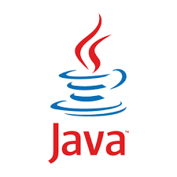
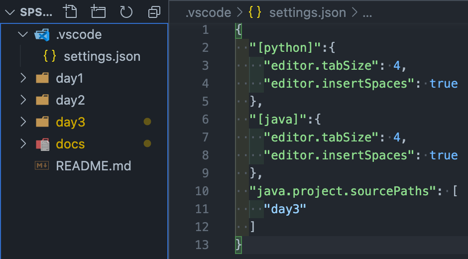
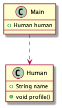
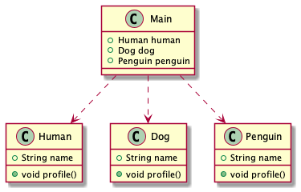
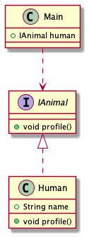
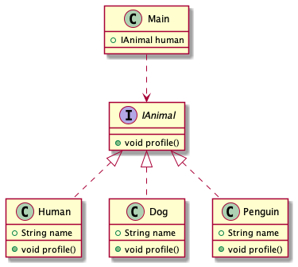
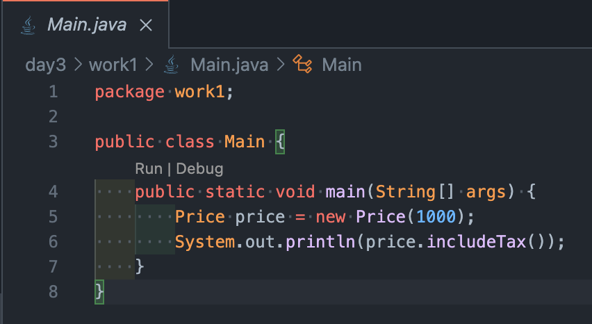
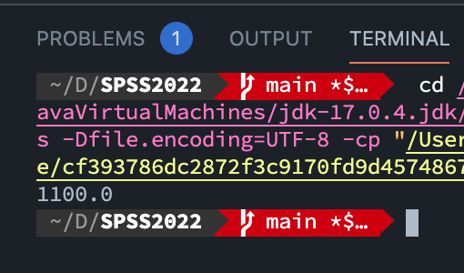
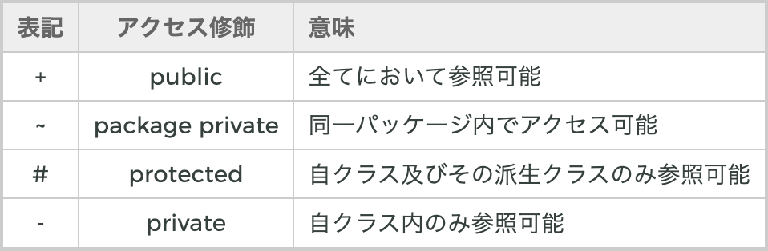
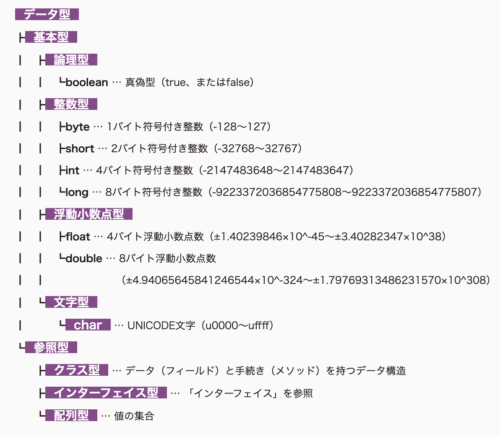

今回は「Java」を扱う。
設計に関わる話をしてから、基本文法(本当に少しだけ)について触れていく。
設計の話は眠たくなると思ったので、最初に述べている。まずは「13」のアクセス修飾子から初めても良いかもしれない。

Java入門や、資料を見ていると、Javaの基本的な使い方は教えてくれるが、その使い方が全くオブジェクト指向プログラミングになっていない。
オブジェクト指向の3大要素として「継承，カプセル化，多態性（ポリモーフィズム)」が挙げられるが、その特性を無視しているように思える。
結果的にバグを量産する継承やポリモーフィズム、容易に変更可能なカプセル化を実装することになる。
そのためこの「Java」の資料では、今回扱う「SOLID原則」の名前だけでも良いので覚えて欲しい。
SPSS2022/day3 とフォルダを作成してください。
Javaの説明に入る前にVSCodeの設定について簡単に理解しよう。
第1回目で「設定 -> java:homeで検索 -> setting.jsonで開く」で設定をしたのは覚えているだろうか。
VSCodeはこの、setting.jsonで設定を管理しており、java:homeを設定したことによって、VSCode側に「私はjdk-17.0.4を使いますね〜」と教えている。
これによってVSCode側はjdk-17.0.4を用いたビルドや補完をしてくれるということになる。
今回はJDK(Java Development Kit)を活用するので、必ずjava:homeの設定をしよう。
また、.vscodeフォルダを作成して、その中にsettings.jsonを追加すると、VSCodeのプロジェクト別に設定を変えることができる。
{
"[python]":{
"editor.tabSize": 4,
"editor.insertSpaces": true
},
"java.project.sourcePaths": [
"day3"
]
}
Windows、Mac、Linuxなど、あらゆる環境で動作する。
理由は「JVM(Java Virtual Machine)」と呼ばれる環境でJavaを動作させるからである。
→OSに依存せず、安定した動作をする。
オブジェクト指向とは、「ソフトウェアで扱う事柄について、データを操作(メソッド)をまとめて1つのオブジェクトとして捉える」ことである。
いわゆる変数のこと。Javaでは変数のことをフィールド(field)またはメンバ変数と呼ぶ。
フィールドは、オブジェクトの性質をもつ。
簡単に表すと、クラスの集まりである。
パッケージは以下のように表される。
package パッケージ名;
パッケージ名はフォルダ名になる。
例えば、Carsというパッケージ(フォルダ)がある。Carsの中には車のクラスが置かれている。
Carsのパッケージの中のBlackCarというクラスをCarsパッケージ外から呼び出すには以下の様にします。
import Cars.BlackCar;
これで簡単にBlackCarクラスを使うことができます。
いわゆる関数のこと。メソッドの目的はオブジェクト内のフィールドを操作することである。メンバメソッドと呼ぶこともある。
大半のオブジェクト指向言語では、クラスという仕組みがある。(ない言語もある)
クラスには、オブジェクトを作る際のデータやメソッドを定義してあり、いわばオブジェクトの設計図である。
javaはコンパイル言語なので比較的早いです。
Pythonはスクリプト言語でコンパイルをしません。
コンピュータが扱いやすい形にファイルを作成すること
javaの場合は「.java」ファイルをコンパイルによって「.class」というファイルで生成している。
この「.class」ファイルをJVM上で実行している。
大抵のプログラミング言語には命名指針(ルール)がある。
ルールに沿ってコーディングすることは、結論から言うと可読性が向上する。
Pascal記法
例
PermissionsIntroAsyncTaskcamelCase記法
例
fileSend()checkVersion()フィールドの値を取得するメソッド - 先頭をget
フィールドの値を設定するメソッド - 先頭をset
以降camelCase記法
例
getCount()setDate()メソッド名が命題を表す様に命名する
例
isEmpty()hasChanged()canAccess()全て大文字
区切りはアンダースコア"_"で結合
例
LENGTHMIN_VALUEcamelCase記法
例
countstartDate英単語の対称性を意識する
add | remove |
insert | delete |
get | set |
start | stop |
begin | end |
クラス設計をすることは、拡張性向上や可読性向上につながる。実装速度こそ落ちるが、開発が進むにつれて設計は効果を発揮する。
設計はすぐに理解できるものではないし、実際にソースコードに落とし込むのは大変。
最初はとりあえずソースコードを書いてみて、リファクタリングするのが、精神的な不安が少なく、おすすめ。
リファクタリング(Refactoring) - 「外部から見た時の挙動は変えずに、プログラムの内部構造を整理すること」
例えば、以下のコードは何を表しているかわかるだろうか。
public double func(int a){
return a * 1.10
} 正解は、税込み価格を計算するメソッドである。
これをリファクタリングすると
public double includeTax(){
return price + price*TAX_RATE;
}「値段+値段×税率」を計算していることが考えられるようになる。
→「3日後の自分は他人である。」という格言があるように、3日後の自分でもわかるソースコードを書くように意識する。常に自分のソースコードが「良いコード」なのかを疑うべきである。
設計の考え方はたくさんあるが今回は取り立てて有名なSOLID原則について理解する。
SOLID原則とは
の頭文字を取ったものである。
オブジェクト指向プログラミングのガイドラインのようなもので、これに則ることで「良いコード」に繋がります。
クラスを変更する理由は、単一でなければならない。
△ クラスの「責任(役割)」は、単一でなければならない
◯ クラスを「変更する理由」は単一でなければならない
単一責任が守られていない例
package work1;
public class Product {
private final String productName;
private final int price;
public Product(final String name, final int price){
this.name = name;
this.price = price;
}
public double includeTax(){
return price*1.10;
}
}商品クラスです。一見良さそうに見えます。ではここに、料金を半額にするメソッドや料金を1/4にするメソッドを追加すると、商品クラスの内容が膨大になります。
今回の例ではフィールドの数が2つと少ないですが、フィールドが10個あり、それらのメソッドが100個あると仮定します。
そして税率が変更されたので料金に関するメソッド全てを変更することになった際にすぐに対応できるでしょうか。
これは単一責任の原則に違反しています。
public class Price{
private static double TAX_RATE = 0.10;
private final int price;
public Price(final int price) {
this.price = price;
}
/**
* 値段から税込み価格を計算する
* @return {@link double} 税込み価格
*/
public double includeTax(){
return price + price*TAX_RATE;
}
}するとProduct.javaが以下のように書けることがわかります。
public class Product {
private final String productName;
private final Price price;
public Product(final String name, final int price){
this.name = name;
this.price = new Price(price);
}
}この時クラスPriceを「値オブジェクト」と言い、「final修飾子」を用いた「不変(イミュータブル)」であることが求められます。
しかし、なんでもかんでも値オブジェクトを定義することが良いわけではなく、ユースケースによって異なります。
ソフトウェアの構成要素は拡張に対して開いていて、修正に対して閉じていなければならない
つまり、ソフトウェアの振る舞いは、既存のソースコードを変更せずに拡張できるようにすべきであると言うこと。
SPSS2022/day3/work2/に以下のコードを追加してください
package work2;
public interface IMember {
public double calculate();
}※ interfaceについては後述します。interfaceの定義例としても見てください
package work2;
class Platinum implements IMember{
private static double DISCOUNT = 0.3;
private final double totalAmount;
public Platinum(final double totalAmount){
this.totalAmount = totalAmount;
}
@Override
public double priceCut() {
return totalAmount - totalAmount*DISCOUNT;
}
}package work2;
class Gold implements IMember{
private static double DISCOUNT = 0.2;
private final double totalAmount;
public Gold(final double totalAmount){
this.totalAmount = totalAmount;
}
@Override
public double priceCut() {
return totalAmount - totalAmount*DISCOUNT;
}
}package work2;
class Silver implements IMember {
private static double DISCOUNT = 0.1;
private final double totalAmount;
public Silver(final double totalAmount){
this.totalAmount = totalAmount;
}
@Override
public double priceCut() {
return totalAmount - totalAmount*DISCOUNT;
}
}package work2;
import java.util.ArrayList;
public class Main {
public static void main(String[] args) {
ArrayList<IMember> members = new ArrayList<>();
int price = 10000;
members.add(new Platinum(price));
members.add(new Gold(price));
members.add(new Silver(price));
for(IMember member: members){
System.out.println(String.format("%s会員は%d円を%.0f円で買うことができます",member.getClass().getSimpleName(), price, member.priceCut()));
}
}
}これらのソースコードは会員別の値段を表している。
IMemberというinterfaceを用いたことによって、拡張がしやすくなり、修正する必要がないということだ。このinterfaceの特徴を「多態性(ポリモーフィズム)」と言い、これがOCPにも繋がる。
例えば新しくBronze会員を設けることにした。Bronze.javaは上記のGold.javaのソースコードのように書き、DISCOUNTの値を変えれば良いだけである。
サブクラス(派生型)は、そのスーパークラス(基底型)と置換可能でなければならない
interfaceがここで言う完全にスーパークラスだとは言いきれないため多少語弊があるが、ニュアンスとして伝える。
先のGold.javaが以下のようになっているとする。
package work2;
class Gold implements IMember{
private static double DISCOUNT = 0.2;
private final double totalAmount;
public Gold(final double totalAmount){
this.totalAmount = totalAmount;
}
@Override
public double priceCut() {
return totalAmount;
}
}priceCut()の振る舞いが変わっていることが確認できるだろうか。
Gold.javaはIMemberのサブクラスであり、IMemberの関数の1つであるpriceCutは値引き後の値段を返す振る舞いをする。
interfaceで例を説明しており、より誤解を生みそうなので省略すると、要するに同じ振る舞いをさせろということである。
ドリンクバーで何かしらのボタンを押したらドリンクが出てきてほしい。ボタンを押したらガソリンが出てくるのはおかしい。
不必要なメソッドに依存しなくても良いように、分離できるインターフェースは分離しよう
以下のコード例を見てみよう
public interface IAnimal {
public void eat();
public void sleep();
public void fly();
}IAnimalは動物の
を示したインターフェースである。これを実装すると、
public class Bird implements IAnimal{
@Override
public void eat(){
// 食べる
};
@Override
public void sleep(){
// 眠る
};
@Override
public void fly(){
// 飛ぶ
};
}Birdクラスは動物であり、「食べる、眠る、飛ぶ」ことができる。
次に、Dogクラスを実装すると
public class Dog implements IAnimal{
@Override
public void eat(){
// 食べる
};
@Override
public void sleep(){
// 眠る
};
@Override
public void fly(){
// 犬は飛べないのに...
};
}Dogクラスは動物であるが、飛ぶことができない。従ってメソッドflyは不必要である。こうした不必要なメソッドの実装を強制させないようにインターフェースを分離しましょうということ。
以下のように分離させてみる。
public interface IAnimal {
public void eat();
public void sleep();
}public interface IFly{
public void fly();
}新しくIFlyインターフェースを定義する。
public class Bird implements IAnimal, IFly{
@Override
public void eat(){
// 食べる
};
@Override
public void sleep(){
// 眠る
};
@Override
public void fly(){
// 飛ぶ
};
}BirdにはIAnimalとIFlyのインターフェースを実装。
public class Dog implements IAnimal{
@Override
public void eat(){
// 食べる
};
@Override
public void sleep(){
// 眠る
};
}一方DogはIAnimalのみを実装すれば良い。
具象クラスではなく抽象クラスに依存しよう
これまで散々見てきた「interface」がまた登場します。
例えばHumanというクラスがあります。
public class Human {
public String name;
public Human(String name){
this.name = name;
}
public void profile(){
System.out.println(name);
}
}これをMainクラスでインスタンス化します。
public class Main {
public static void main(String[] args) {
Human human = new Human("Bana7");
human.profile();
}
}その前に、依存関係とは何でしょうか。
この時の依存関係はMainクラスで「Human human = ...」とHuman型の変数を定義していることから、「MainクラスはHumanクラスに依存する」ということになり、わかりやすく図(UML図の一つであるクラス図)にすると以下のようになる。(矢印の方向に注目してください)

MainクラスはHumanクラスに依存するため、Humanクラスについて「知る」必要があります。同様にして、Dogクラスや、Penguinクラスがある場合は、それらについて「知る」必要があります。
「知る」というのは、メソッドやフィールドがどう振る舞うかを知るということです。

Mainクラスは3つのクラスについて「知る」必要があり、大変なので、interfaceを実装します。
public interface IAnimal {
public void profile();
}public class Human implements IAnimal{
public String name;
public Human(String name){
this.name = name;
}
@Override
public void profile(){
System.out.println(name);
}
}これをMainクラスでインスタンス化します。
public class Main {
public static void main(String[] args) {
IAnimal human = new Human("Bana7");
human.profile();
}
}この時の依存関係はMainクラスで「IAnimal human = ...」とIAnimal型の変数を定義していることから、「MainクラスはIAnimalクラスに依存する」ということになります。
一方、Humanクラスは「public class Human implements IAnimal」とインターフェースであるIAnimalを使うことを宣言していることから、「HumanクラスはIAnimalクラスに依存する」ということになります。
同様に図(UML図の一つであるクラス図)で表すと以下のようになります。

interfaceは抽象クラスです。IAnimalの具象クラスはHumanです。最初はMainは具象クラスのHumanに依存していましたが、interfaceを使うことにより抽象クラスに依存することができました、Humanクラスも同様です。
抽象クラスに依存することにより
「中身はわからないけど、profileというメソッドを使うと返り値はないけど、何か実行されるんだな」
ということがMainクラスの視点ではわかります。
これが依存性逆転の原理です。

のように数が増えてくると、その効果が顕著になってくる。
以下のファイルを作成し、実行できることを確認しよう
package work1;
public class Main {
public static void main(String[] args) {
Price price = new Price(1000);
System.out.println(price.includeTax());
}
}package work1;
public class Price{
private static double TAX_RATE = 0.10;
private final int price;
public Price(final int price) {
this.price = price;
}
/**
* 値段から税込み価格を計算する
* @return {@link double} 税込み価格
*/
public double includeTax(){
return price + price*TAX_RATE;
}
}
ここのRun|DebugのRunの方をクリックする。

1100.0と出力されていることを確認する。

参考: https://www.mum-meblog.com/entry/research-detail/plant_uml
4つありますが、まずは「public」と「private」この2つの意味をしっかり理解しましょう。
Pythonでは触れなかったが、プログラミング言語には「型」というものがある。
そして、プログラミング言語は「動的型付け言語」か「静的型付け言語」のいずれかに分類することができる。
Javaは静的型付け言語で、Pythonが動的型付け言語である。
静的型付け言語は、変数を定義する際に一緒に型を定義する。

基本型は別名「プリミティブ型」とも呼ぶ。
「int は整数で、floatとかは小数点、Stringで文字列を定義できるんだなぁ」程度の理解でまずは大丈夫。必要になったら調べよう。
定義は以下のようにする
int x;
String name;コレクション型(リストまたは配列)は以下の様に定義する。
import java.util.ArrayList;
...省略
ArrayList<Integer> numbers = new ArrayList<>();
numbers.add(10);ArrayList<参照型> numbers = new ArrayList<>();
で定義でき、members.add(10);で追加できる。
また参照型で定義するので、ArrayList<int> ... の様にはできない。
型について詳しく知りたい方は、例えばC言語を学んでみるとより詳しくなれると思います。
クラスの定義の仕方は
public class クラス名 {
//処理
}実際に定義してみる。
public class Human {
String name;
int age;
}この時、nameとageのことをフィールド(変数)と呼ぶ。
pythonのクラス定義でいうと、「__init__(self)」である。
コンストラクタは後述する、インスタンス化の際に自動で呼ばれるメソッドである。
コンストラクタの名前はクラス名と同じであり、戻り値は記述しない。
戻り値はPythonと同じで「return ...」のことである。
public class Human {
String name;
int age;
public Human(String name, int age){
this.name = name;
this.age = age;
}
}「this」は自分自身(インスタンス)を表す。Pythonでいう「self」である。
フィールド名にnameとageがあったら、コンストラクタの引数の名前は同じくnameとageとするのが一般的なので、thisをつけて区別させる。
いわゆる関数 「データ型 + 関数名(データ型 + 引数名)」で定義できる。
引数はなくても大丈夫。
public class Human {
String name;
int age;
public Human(String name, int age){
this.name = name;
this.age = age;
}
public void profile(){
System.out.println(name+"は"+age+"歳です。");
}
public String getName(){
return name;
}
public void setName(String name){
this.name = name;
}
}「System.out.println()」で標準出力(Shellに値が表示される)
「void」型がない -> 戻り値がないことを示す。
getフィールド名や、setフィールド名「アクセサ」と呼ばれ、それぞれゲッター、セッターと呼ばれる。
通常クラスのインスタンス化(実際にオブジェクトを生成すること)は以下の様にする。
public class Main {
public static void main(String[] args) {
Human human = new Human("Bana7", 20);
human.profile();
}
}
クラス名 + 変数名(インスタンス変数名) = new クラス名(引数);
でインスタンスできる。
またクラスで宣言したメソッドには、
インスタンス変数名.メソッド名で呼ぶことができる。
public static void main(String[] args) {
}はmainメソッドと呼ばれ、javaを実行する際はこのmainメソッドがエントリーポイントになります。
「static」は静的という意味で、インスタンス化しなくても使えるという意味です。
「static + データ型 + 変数名 = "何か"」で定数も定義できます。
また度々出ていた「final」は代入時以降、値を変えることができなくする修飾子です。
このfinalを使うと「イミュータブル(不変)」にでき、オブジェクト指向プログラミングでは結構重要な修飾子です。
オブジェクト指向の特徴の1つである。
継承を使うと、クラスの内容を「継承」して別のクラスでも扱うことができる。
継承は
がある。
interfaceの使い方は、設計パートで説明している。extendの方は、バグを量産する元になりうるので最初の内は学ぶべきではないため、省略する。基本的にはinterfaceを使って欲しいところである。(個人的な意見なので、人によって意見は変わる)
オブジェクト指向の特徴の1つである。
あるメソッドなどが、引数や返り値の数やデータ型などの異なる複数の実装を持ち、呼び出し時に使い分ける様にできることである。
つまり依存関係が弱い「疎結合」であるということ、オブジェクト指向プログラミングでは疎結合であるほど、拡張性が高くなり、バグが発生しづらくなる。
このポリモーフィズムもinterfaceを用いてOCPのwork2のところで実装している。
オブジェクト指向の特徴の1つである。
よくその例として、先述のgetterとsetterがあるが、このカプセル化は非常に弱い物になっていると考えられる。
詳しくは「ドメイン駆動設計(DDD)」を学ぶ、「継承や、ポリモーフィズム」と共にオブジェクト指向プログラミングについて理解できるので省略する。
※ 省略するのはここでカプセル化の弱さについて説明すると、圧倒的に時間が足りないため
本資料8「OCP(Open Closed Principle) - オープンクローズドの原則」のwork2にクラスBronzeを追加しなさい。
DISCOUNT = 0.05とする。(実装内容は他のGold.java等を参考にする)
またMainクラスを以下の様に訂正する。
package work2;
import java.util.ArrayList;
public class Main {
public static void main(String[] args) {
ArrayList<IMember> members = new ArrayList<>();
int price = 10000;
members.add(new Platinum(price));
members.add(new Gold(price));
members.add(new Silver(price));
members.add(new Bronze(price));
for(IMember member: members){
System.out.println(String.format("%s会員は%d円を%.0f円で買うことができます",member.getClass().getSimpleName(), price, member.priceCut()));
}
}
}Runを押して以下の様に出力されることを確認する。
Platinum会員は10000円を7000円で買うことができます
Gold会員は10000円を8000円で買うことができます
Silver会員は10000円を9000円で買うことができます
Bronze会員は10000円を9500円で買うことができます今回は設計に重きをおいてjavaについて説明した。
この資料はjava入門よりも、java入門での向き合い方の方が近いのかもしれない。
いずれにせよ、Javaについて学ぶ際は「設計」を意識してみよう。
package work2;
public class Bronze implements IMember{
private static double DISCOUNT = 0.05;
private final double totalAmount;
public Bronze(final double totalAmount){
this.totalAmount = totalAmount;
}
@Override
public double priceCut() {
return totalAmount - totalAmount*DISCOUNT;
}
}確認できたら、githubにpushしよう。